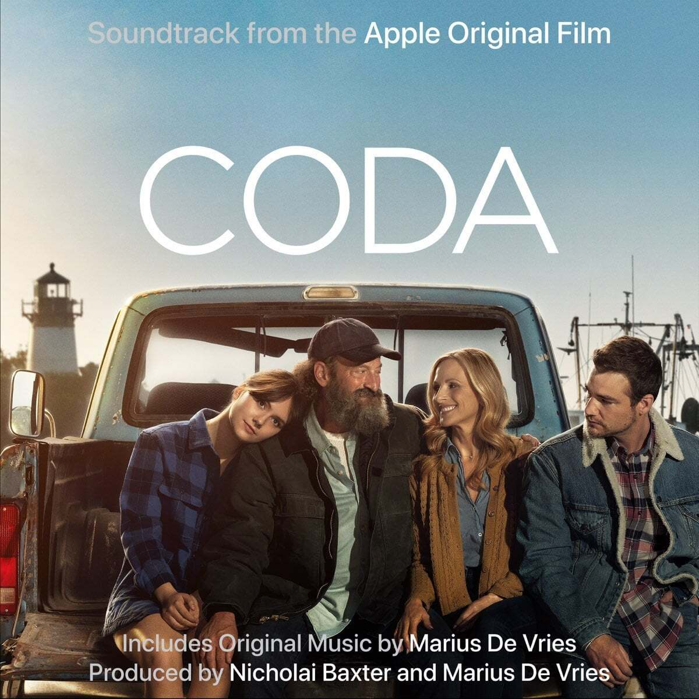
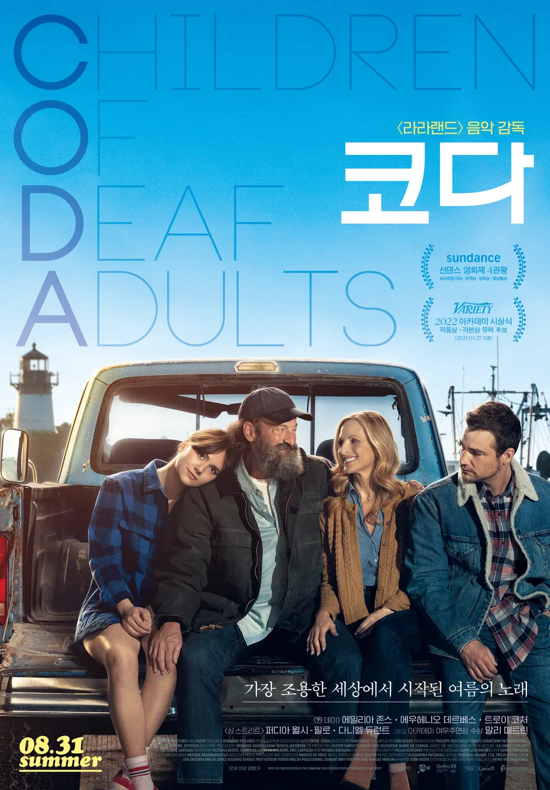

안녕하세요 라보엠입니다.
오늘 소개해드릴 음악은 좋은 노래들이 많은 음악 영화 코다(Coda) 의 노래들입니다. 아내가 영화를 먼저 보고 추천을 해줬었는데, 영화에 나온 노래만 듣다가 이제야 보게 되었네요. 코다는 청각 장애인 부모 사이에서 태어난 청각이 정상인 자녀를 뜻합니다. Coda - Children of deaf adult. 영화 코다는 2014년 개봉한 프랑스 영화 미라클 벨리에를 리메이크한 영화이며, 영화 미라클 벨리에는 실제 코다인 베로니크 풀랭의 자서전 수화, 소리, 사랑해가 원작입니다.
영화 코다 시놉시스
음악의 마법에 빠질시간!
가장 조용한 세상에서 시작된 여름의 노래!
24시간 함께 시간을 보내며 소리를 들을 수 없는 가족을 세상과 연결하는 코다 루비는 짝사랑하는 마일스를 따라간 합창단에서 노래하는 기쁨과 숨겨진 재능을 알게 된다. 합창단 선생님의 도움으로 마일스와의 듀엣 콘서트와 버클리 음대 오디션의 기회까지 얻지만 자신 없이는 어려움을 겪게 될 가족과 노래를 향한 꿈 사이에서 루비는 망설이는데...
루비의 꿈이 되어준 음악
굳이 설명할 것 없이 노래를 들으면 느껴집니다. 주인공 루비와 마일스의 듀엣곡 You're all i need to get by 와 버클리 음대에 입학하기 위해 부르는 노래 Both sides now 두 곡이 참 좋습니다.
You're all i need to get by
듀엣곡 You're all i need to get by 에서는 에밀리아 존스의 맑고 투명한 음색이 사랑하는 사람의 마음을 잘 담겨있어서 듣다보면 정말 기분이 좋아집니다.
Both sides now
Both sides now 는 영국의 가수 조니 미첼의 노래로 버클리 음대에서 오디션을 볼 때 부르는데 루비의 삶이 그대로 담겨져 있는 것 같습니다. 자신의 노래를 듣지 못하는 엄마 아빠와 오빠를 위해서 오디션을 보면서도 수어로 같이 표현하며, 가족들을 생각하고 사랑하는 마음을 그대로 표현하여 오디션에도 합격할 수 있지 않았나 싶습니다. 노래의 원작자 가수 조니 미첼은 한국에는 잘 알려져있지 않지만, 영화 러브 액츄얼리(2003)에서도 이 노래가 나옵니다. 영화상에서 카렌(엠마 톰슨)이 좋아하는 가수가 조니 미첼이었고, 남편 해리(앨런 릭먼)가 크리스마스 선물로 조니 미첼의 CD를 선물해줍니다. 회사 직원에게는 비싼 목걸이를 사놓고.. 말이죠. 이걸 알게된 카렌의 심정이 조니 미첼의 노래에 담겨져 있습니다.
Both Sides Now 가사
1.
Rows and flows of angel hair
And icecream castles in the air
And feather canyons everywhere
I've looked at clouds that way
But now they only block the sun
They rain and they snow on everyone
So many things I would have done
But clouds got in my way
I've looked at clouds from both sides now
From up and down and still somehow
It's cloud illusions I recall
I really don't know clouds at all
Moons and Junes and Ferris wheels
The dizzy dancing way that you feel
As every fairy tale comes real
I've looked at love that way
But now it's just another show
And you leave 'em laughing when you go
And if you care, don't let them know
Don't give yourself away
I've looked at love from both sides now
From give and take and still somehow
It's love's illusions that I recall
I really don't know love
Really don't know love at all
2.
Tears and fears and feeling proud
To say, "I love you" right out loud
Dreams and schemes and circus crowds
I've looked at life that way
Oh, but now old friends they're acting strange
And they shake their heads and they tell me that I've changed
Well something's lost, but something's gained
In living every day
I've looked at life from both sides now
From win and lose and still somehow
It's life's illusions I recall
I really don't know life at all
It's life's illusions that I recall I really don't know life I really don't know life at all
영화 코다 OST 추천
애플의 스트리밍 서비스 애플TV플러스에서 제작하였으며 OTT 영화 최초로 2021년 아카데미 작품상을 수상하기도 했습니다.
좋은 노래들과 가족의 소중함 그리고, 꿈을 향해 날아가는 루비의 아름다운 모습을 담은 영화 코다와 좋은 노래들이 많이 수록된 코다 OST 추천드립니다.

